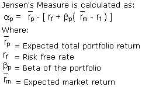

A risk-adjusted performance measure that represents the average return on a portfolio over and above that predicted by the capital asset pricing model (CAPM), given the portfolio's beta and the average market return. This is the portfolio's alpha. In fact, the concept is sometimes referred to as "Jensen's alpha."
If the definition above makes your head spin, don't worry: you aren't alone! This is a very technical term that has its roots in financial theory.
The basic idea is that to analyze the performance of an investment manager you must look not only at the overall return of a portfolio, but also at the risk of that portfolio. For example, if there are two mutual funds that both have a 12% return, a rational investor will want the fund that is less risky. Jensen's measure is one of the ways to help determine if a portfolio is earning the proper return for its level of risk. If the value is positive, then the portfolio is earning excess returns. In other words, a positive value for Jensen's alpha means a fund manager has "beat the market" with his or her stock picking skills.
{kind=link}